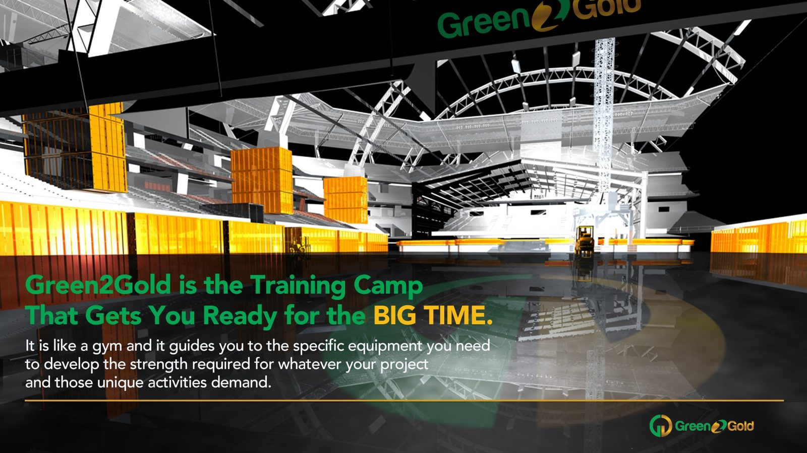
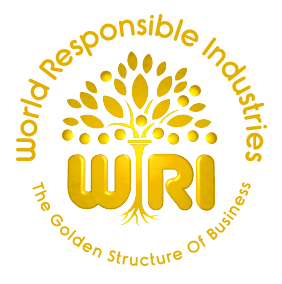
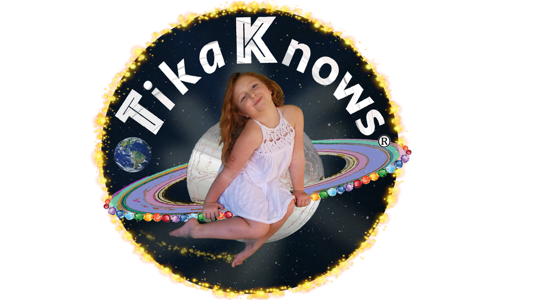
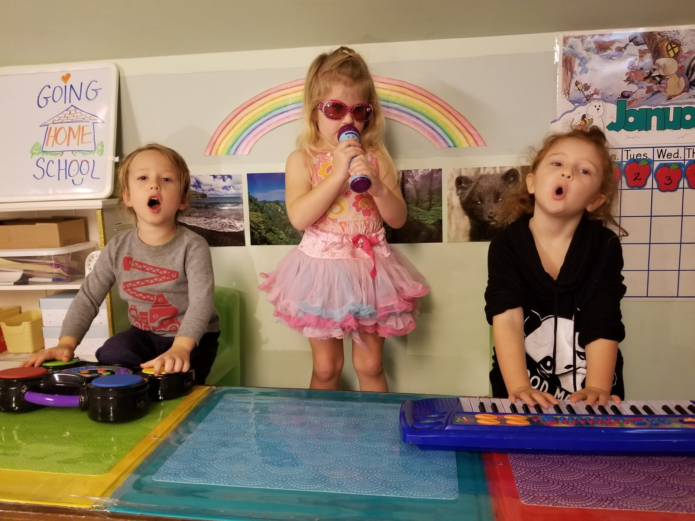
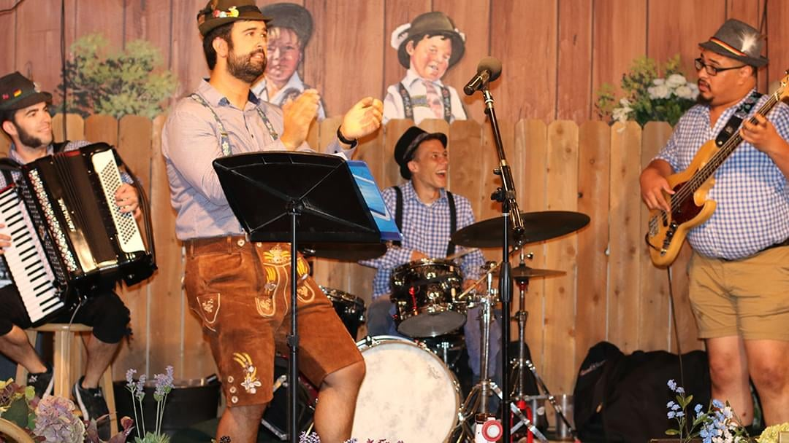
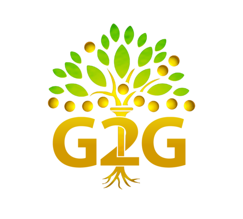
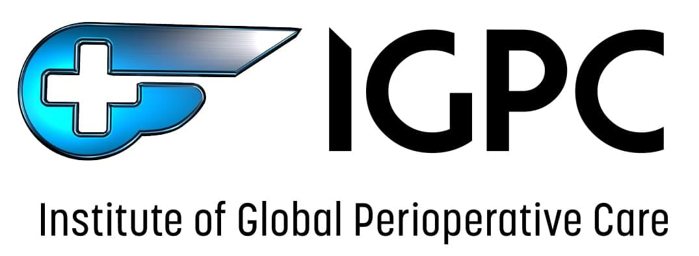
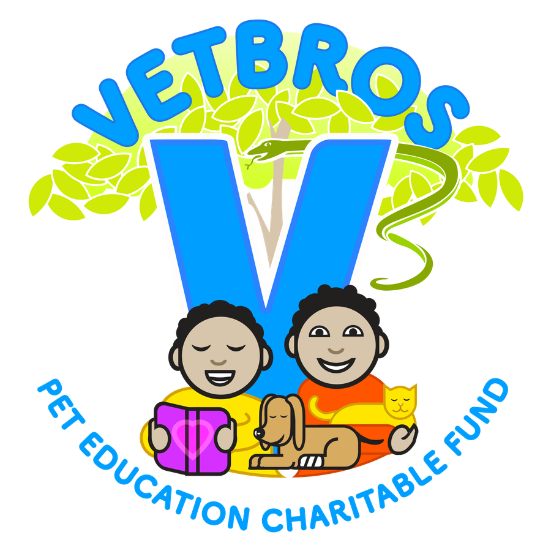
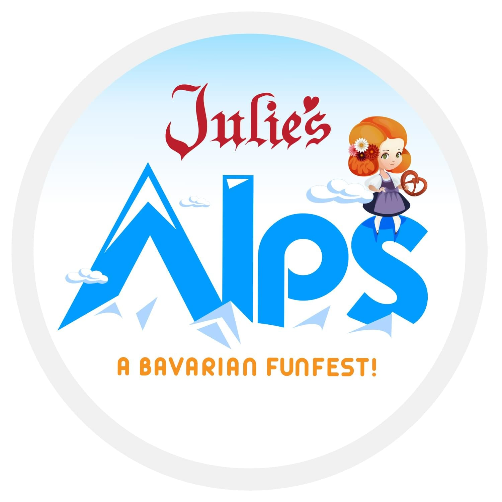
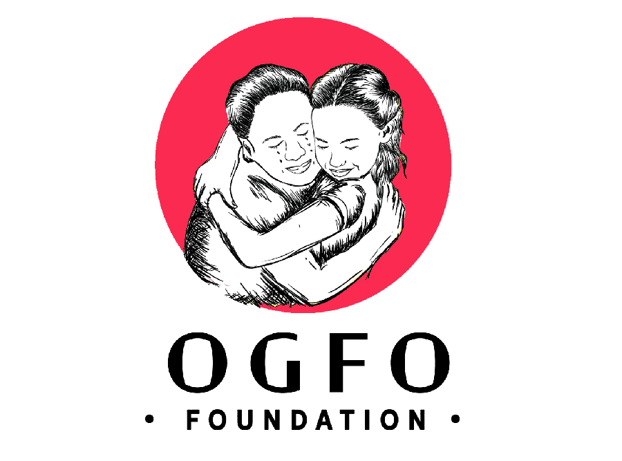

Green2Gold
Green2Gold is a non profit Incubator for renewable energy, clean tech, sustainability, invention & entrepreneurship and to help other non-profits with socially & environmentally responsible missions.
green2gold.org →The work EEG does and the programs it supports — from legal self-defense and children's education to community workshops and nonprofit businesses.
Beginning in 2025, we are launching a Legal Self-Defense Academy, for those interested in getting rid of any weakness, and begin the process to defend themselves and potentially any and all of our environments more efficiently and more effectively.
EEG's president, Lielle Arad, stumbled unwittingly into a web of deception and legal abuse while spearheading EEG's nonprofit business efforts. Rather than lay down, she rose up to help defend EEG and herself, became inspired to become a lawyer, and to create access to justice through educational programs for those that may find themselves caught in these types of deceptive legal pressures and/or white-collar crimes.
“There is no justice in our judicial system. When it comes down to it, it's who's the better liar.”— Opposing Counsel
It was actually my lawyer that recommended I proceed pro se. He's not keeping up with my opponents high powered attorney and their frivolous motions and endless gamesmanship tactics. I want to step in and take some control. I want to put myself in the ring and stop the painful, demoralizing, blindsiding, life-draining intimidations. Stop the crooks from continuing to cheat me and my non profit organization and protect anyone else I can. I want justice. I want to be the hero. I want to become the lawyer.
At the same time I'm beyond nervous, physically sick to my stomach, horrified that I'm not only naïve but far too ignorant in litigation to withstand the power of the paid and the experienced.
In between these ups and downs, I lay the fears and dreams aside and scour the internet for knowledge. I scour the books for understanding of the law, understanding of the rules, understanding of the court. I begin to learn little by little the structure, the stage, the art, the hard earned lessons and ways of the interconnected layers of law the litigant must not only memorize but master.
The first hearings against the opposing counsel, and in the presence of the judge leave me cold and numb. But I refuse to settle for bitter, nor accept frustration as my only future. I refuse to make excuses, and instead face my own deficits for the sake of my case. I learn to understand the legal issues. I learn to apply the law. I learn to communicate with the courts the way they need to hear it. I learn to win.
Presented by the Law Office of Lillian Khosravi & Lielle Arad — A Prevailing Self Represented Litigant through 700 legal actions, a 3 week trial, post trial motions, and settlement. Lielle Arad is also the Legal Administrator at the Law Office of Lillian Khosravi and certified to practice under the supervision of Lillian Khosravi, Esq.
Law Suits Me — All Things Litigation, Trial & Appeal for the Non Lawyer or New Lawyer.
Send Me Now!Pro se support
Lielle's pro se course aims to help you gain the skills required for real results…
Start with the right foundation…
If you don't move, no one will…
The most important skills you need.
Learn to communicate in an effective way.
Be held to the higher standard Courts will expect of you…
Be prepared for gamesmanship tactics and know what you can do.
If you don't quit, you can't lose.
No one is going to hear it.
Lielle Arad is a dedicated non-profit president, ontological coach for over 20 years, pro se litigant, and legal administrator/paralegal for a law office in California.
Join to receive…
For less than one hour of attorney billing you will receive:
“I don't mind if they lie. Lies are limiting. And while they are lying, I am getting more familiar with the truth.”— Lielle Arad, Pro Per Litigant, Ventura County, CA
Sample editable word docs for litigation including:
Follow along, step-by-step instruction for:
If you need paralegal assistance, check out fiverr.com to discover paralegal assistance, legal research assistance, motion drafting preparation assistance, etc. that can help support your progress with very reasonable costs.
If you draft motions and need to organize exhibits and evidence, the latest version of Adobe Acrobat is essential.
Don't just take our word for it.

… unbridled, war like competition, conflicts, narrow focused decision making, short-range actions and one-sided goals. We as a people are obviously overrun with greed, misuse of resources, misuse and abuse of our people and our world as a whole.
Our business and personal decisions have continued to fill our planet with more and more fear, poverty, wars and pollution. The disharmony of the environment our mother planet now chokes in, reflects very little true deep commitment to planet responsibility or individual responsible decision making.
Though, every generation shows some compassion to future generations, they have continued to make decisions that throw future generations into more and more planet-destroying dilemmas, where by the planet itself becomes more and more toxic and less and less inhabitable.
EEG's “TikaKnows” is set up to teach young children how to better understand themselves, fellow students and society at large, as well as to gain a stronger feeling of where those children fit into those situations.
EEG's TikaKnows will also be producing curriculum and videos that will be shared freely online with other teachers and parents that will bring a deeper sense of continuity and a growing sense of responsibility in both the parents, teachers, as well as the children.
EEG is providing vital fundraising to create and sustain retreats for educational training of future teachers, as well as helping fund ‘TikaKnows’ multi-media lessons for teachers, parents and children.
“Let's Stop Confusion and Solve All Mystery, With a Piece of the Puzzle of HARMONY”— TikaKnows


Our organization has workshops with evolved ideas and solutions that work. We will donate our time and energies to teach you all you need to know about finding your own personal, permanent solution. We can show you from the ground up how to discover your own internal, personal infinite harmony. Our workshops help you discern the darkness and disharmonies within you and help you discover your own light.
Discovering your own light will be solving personal disharmonies and imbalances and stopping the collective catastrophic world destroying imbalance, ‘one individual solution at a time’.
In unison with these programs, we are also providing community workshops. It is through extensive research that we have developed long term real solutions for our people and our planets major problems on all levels that we will be freely introducing in these workshops. Along with inventions that can help our planet, we are also at this time able to share very practical and usable understandings for our personal and social issues, including drugs and alcohol, even anger issues, loneliness, death, relationships, personal balance and harmony and many other pertinent issues.
EEG is now providing these vital working and educational atmospheres that will begin the process of bringing more balance and harmony to our people individually and to our planet collectively.
We are sharing these new deeply researched originative long-term solutions to finally help bring real peace to our world. And to finally help solve world hunger, poverty, our ever increasing pollution problems, our dwindling water, especially drinking water. We are going to be helping in major ways, our worlds war victims, including their families with real programs that actually work. We are also supporting, and promoting, and raising money for new innovative major energy solutions.
In 2017 we began establishing non-profit businesses from restaurants to bakeries, to handy man services, to every sector we can get into. And this is just the beginning. We are setting up these non-profit businesses in our communities, making ourselves available and working with people on the ground level. Dealing with possible extreme issues as well as everyday problems with plans to bring about changes and more prosperous harmonious productive solutions.
This new paradigm begins with setting up operations in the heart of the communities through basic non-profit businesses such as Grocery Markets, Restaurants, and other basic services that communities need. EEG has these non-profit businesses fully operated and managed by EEG volunteers, teachers and environmental experts that have been trained and are 100% dedicated to helping bring balance to the planet.

Green2Gold is a non profit Incubator for renewable energy, clean tech, sustainability, invention & entrepreneurship and to help other non-profits with socially & environmentally responsible missions.
green2gold.org →
Julie's Alps is a non profit restaurant whereby we are bringing our philosophy of harmony & responsibility directly into all aspects of this vital working atmosphere.
Visit Julie's →
Green2Gold
IGPCInstitute of Global Perioperative Care
VetBros
Julie's Alps
OGFO Foundation